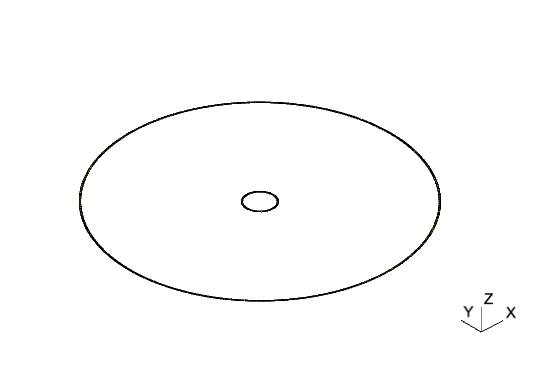
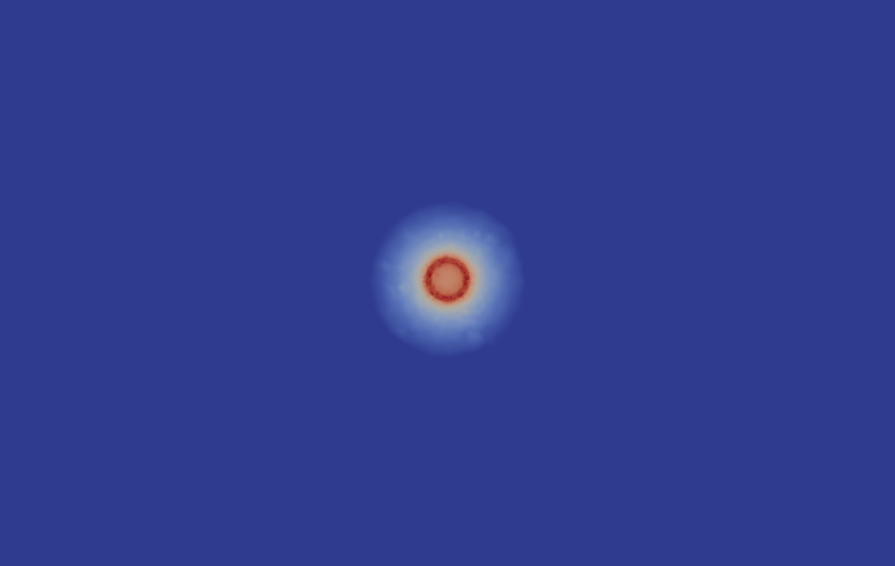
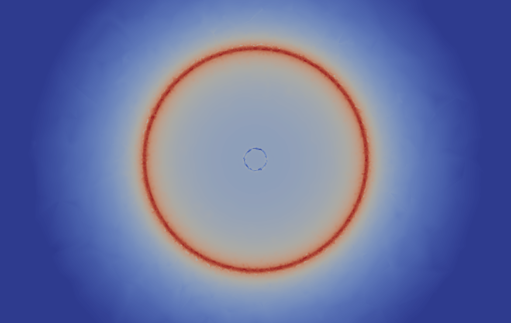

Inductance Matrix for a Pair of Concentric Rings
The files for this example can be found in the examples/rings/ directory of the Palace source code.
This example seeks to compute the inductance matrix for a system of two concentric current-carrying rings of radii $r_a$ and $r_b$, each with width $w$. As for the previous example, the permeability of the surrounding medium is assumed to be the permeability of free space. The mutual inductance, $M_{ab}$, can be easily computed for the case where $r_a\ll r_b$ and $w = 0$ using the Biot-Savart law as
\[M_{ab} = \frac{\mu_0\pi r_b^2}{2 r_a} \,.\]
Analytic expressions for the self inductance of this configuration can also be derived, for example from [1] we have
\[\begin{aligned} M_{aa} &= \mu_0 r_a \left(\log{\frac{16 r_a}{w}}-1.75\right) \\ M_{bb} &= \mu_0 r_b \left(\log{\frac{16 r_b}{w}}-1.75\right) \,. \end{aligned}\]
We take in this case $r_a = 10 \text{ μm}$, $r_b = 100 \text{ μm}$, and $w = 1 \text{ μm}$. The mesh.jl script in the mesh/ directory is used to generate an unstructured tetrahedral mesh with Gmsh, saved to mesh/rings.msh, and a depiction is shown below.

The configuration file for the Palace simulation is rings.json. The simulation "Type" is "Magnetostatic", and we add "SurfaceCurrent" boundaries for applying a surface current to drive the inner or outer ring. The rest of the ring boundaries are labeled as "PEC" boundaries, which prescibes a zero magnetic flux, or magnetic insulation, boundary condition. The farfield is also prescribed the "PEC" boundary condition. We seek a second-order solution and use the geometric multigrid AMS solver.
The computed inductance matrix is saved to disk as postpro/terminal-M.csv, and below we show its contents:
i, M[i][1] (H), M[i][2] (H)
1.000000e+00, +4.258505069e-11, +1.958488699e-12
2.000000e+00, +1.958488699e-12, +7.126907323e-10According to the analytic expressions above, for this geometry we should have
\[M_{ab} = 1.973921\text{ pH}\]
for the mutual inductance, and
\[\begin{aligned} M_{aa} &= 41.78537\text{ pH}\\ M_{bb} &= 707.2050\text{ pH} \end{aligned}\]
for the self inductances. Thus, the Palace solution has approximately $0.78\%$ error in the mutual inductance $1.9\%$ and $0.78\%$ errors in the self inductances versus the analytic solutions.
The typical approach used by Palace for lumped parameter extraction uses the computed field energies, but one can also compute the inductance by explicitly integrating the magnetic flux through a surface and dividing by the excitation current. This is configured under config["Boundaries"]["Postprocessing"]["Inductance"] in the configuration file. The resulting postprocessed values are written to postpro/surface-M.csv:
i, M[i][1] (H), M[i][2] (H)
1.000000e+00, +4.258505069e-11, +1.958488699e-12
2.000000e+00, +1.958488699e-12, +7.126907323e-10The values computed using the flux integral method are in close agreement to those above, as expected.
Lastly, we visualize the magnitude of the magnetic flux density field for the excitations of the inner and outer rings. The files for this visualization are again saved to the postpro/paraview directory.
 
References
[1] M. R. Alizadeh Pahlavani and H. A. Mohammadpour, Inductance comparison of the solenoidal coil of modular toroidal coils using the analytical and finite element method, Progress in Electromagnetics Research 20 (2010) 337-352.